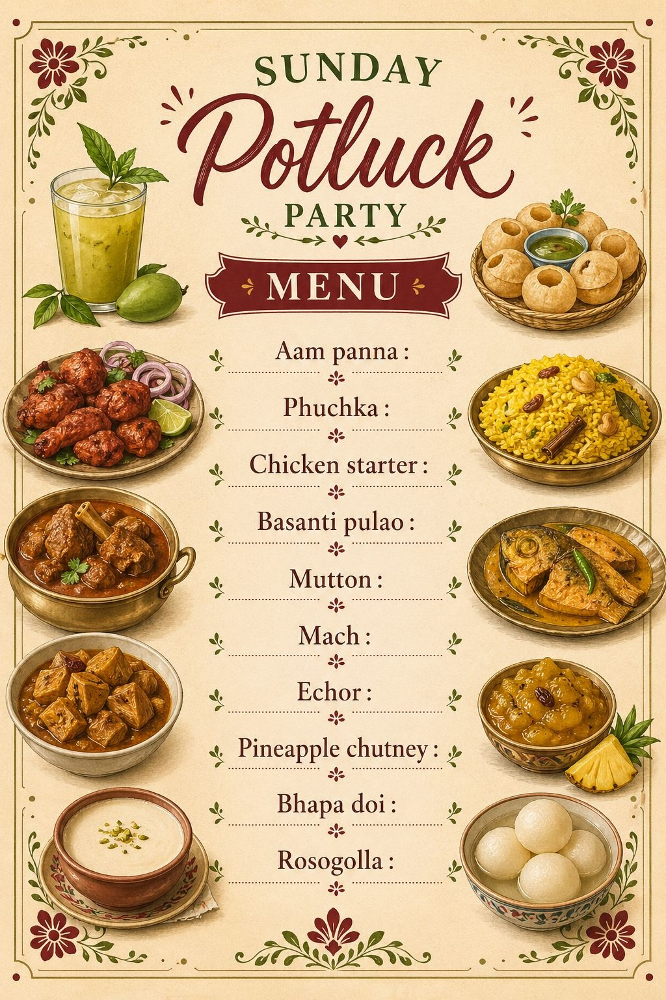

Join us for a fun-filled Sunday gathering! Enjoy music, games, and cultural interaction with fellow community members.
The day concludes with a grand potluck featuring delicious homemade Bengali dishes. Bring your favorite dish and share the joy!
